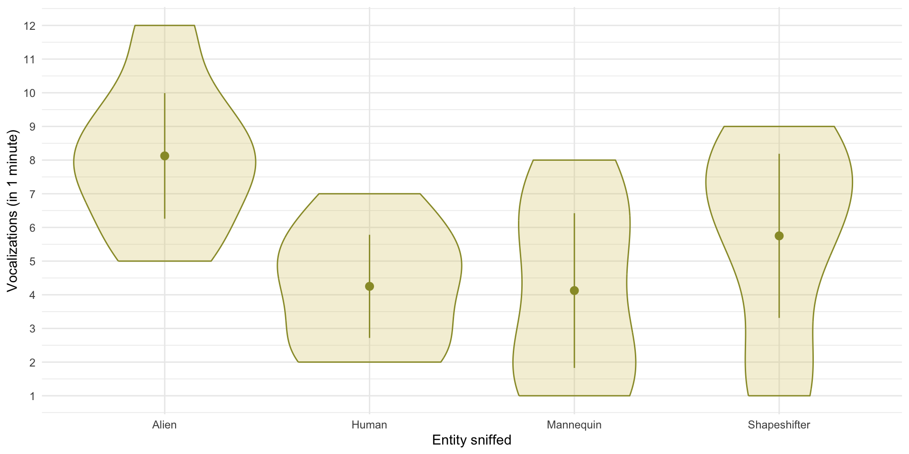
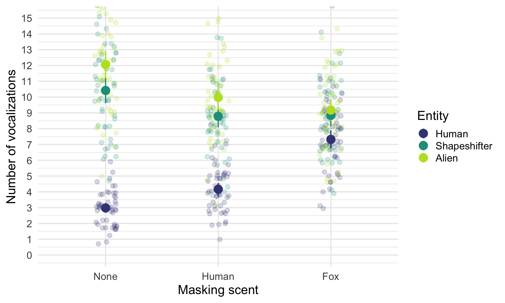
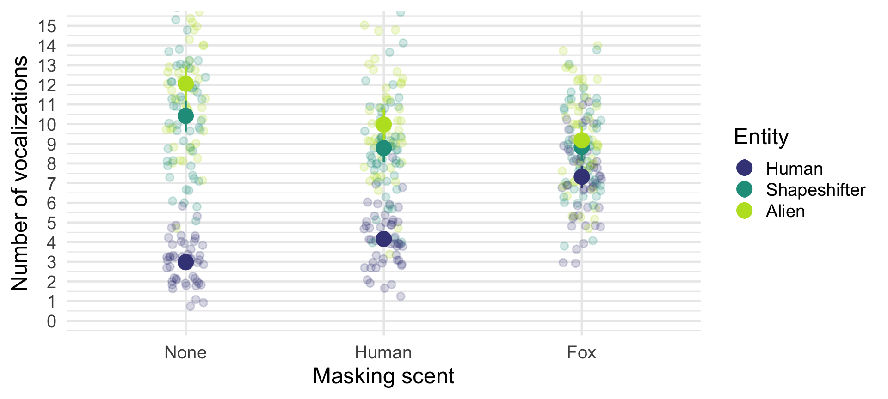

| dog_name | Alien | Human | Mannequin | Shapeshifter | Mean | Variance | |
|---|---|---|---|---|---|---|---|
| Milton | 8 | 7 | 1 | 6 | 5.50 | 7.25 | |
| Woofy | 9 | 5 | 2 | 5 | 5.25 | 6.19 | |
| Ramsey | 6 | 2 | 3 | 8 | 4.75 | 5.69 | |
| Mr. Snifficus III | 5 | 3 | 1 | 9 | 4.50 | 8.75 | |
| Willock | 8 | 4 | 5 | 8 | 6.25 | 3.19 | |
| The Venerable Dr. Waggy | 7 | 5 | 6 | 7 | 6.25 | 0.69 | |
| Lord Scenticle | 10 | 2 | 7 | 2 | 5.25 | 11.69 | |
| Professor Nose | 12 | 6 | 8 | 1 | 6.75 | 15.69 | |
| Mean | — | 8.12 | 4.25 | 4.12 | 5.75 | — | — |
Repeated measures designs
University of Sussex


|


- Systematic variance: created by our manipulation
- Unsystematic variance: variance created by unknown factors

Load and Look
| entity | Mean | SD | IQR | Range | Skewness | Kurtosis | n |
|---|---|---|---|---|---|---|---|
| Alien | 8.12 | 2.23 | 3.50 | (5.00, 12.00) | 0.41 | 0.01 | 8 |
| Human | 4.25 | 1.83 | 3.50 | (2.00, 7.00) | 0.07 | -1.22 | 8 |
| Mannequin | 4.12 | 2.75 | 5.50 | (1.00, 8.00) | 0.16 | -1.78 | 8 |
| Shapeshifter | 5.75 | 2.92 | 5.25 | (1.00, 9.00) | -0.78 | -0.76 | 8 |

Visualize


Evaluate fit
| Parameter | Sum_Squares | Sum_Squares_Error | df | df (error) | Mean_Square | F | p | ω² (partial) |
|---|---|---|---|---|---|---|---|---|
| entity | 83.12 | 153.37 | 1.60 | 11.19 | 13.71 | 3.79 | 0.063 | 0.24 |

Interpret

Interpret contrasts
| Parameter | Difference | SE | 95% CI | t(7) | p |
|---|---|---|---|---|---|
| aliens_vs_non | 2.75 | 0.64 | ( 1.23, 4.27) | 4.29 | 0.004 |
| alien_vs_shape | 1.19 | 0.90 | (-0.93, 3.31) | 1.33 | 0.227 |
| human_vs_manquin | 0.06 | 0.60 | (-1.36, 1.48) | 0.10 | 0.920 |
Can scents distract the sniffer dogs?
- 50 sniffer dogs
- Participated in all conditions
- Sniffed 9 different ‘things’
- Predictor:
entity- Human: the dog sniffs a human
- Shapeshifter the dog sniffs an alien in humanoid form
- Alien the dog sniffs an alien in lizard form
- Predictor:
scent_mask- The entity had no masking scent (none)
- The entity was smeared with human pheromones
- The entity was smeared with fox pheromones
- Outcome: The number of
vocalizationsduring each 1 minute sniff

Load and Look
| entity | scent_mask | Mean | SD | IQR | Range | Skewness | Kurtosis | n |
|---|---|---|---|---|---|---|---|---|
| Human | None | 2.98 | 1.08 | 2.00 | (1.00, 6.00) | 0.45 | 0.27 | 50 |
| Shapeshifter | None | 10.42 | 2.79 | 4.25 | (5.00, 16.00) | 0.04 | -0.73 | 50 |
| Alien | None | 12.06 | 3.03 | 4.00 | (5.00, 19.00) | 0.18 | -0.21 | 50 |
| Human | Human | 4.16 | 1.42 | 2.00 | (1.00, 8.00) | 0.33 | 0.26 | 50 |
| Shapeshifter | Human | 8.78 | 2.47 | 2.50 | (4.00, 16.00) | 0.44 | 0.94 | 50 |
| Alien | Human | 9.98 | 2.75 | 2.50 | (3.00, 19.00) | 0.61 | 1.82 | 50 |
| Human | Fox | 7.32 | 1.98 | 3.00 | (3.00, 11.00) | -0.25 | -0.45 | 50 |
| Shapeshifter | Fox | 8.84 | 2.43 | 4.00 | (4.00, 16.00) | 0.46 | 0.53 | 50 |
| Alien | Fox | 9.18 | 2.41 | 4.00 | (5.00, 14.00) | 0.14 | -0.68 | 50 |
Visualize

Evaluate
| Parameter | Sum_Squares | Sum_Squares_Error | df | df (error) | Mean_Square | F | p | ω² (partial) |
|---|---|---|---|---|---|---|---|---|
| entity | 2641.26 | 409.63 | 1.98 | 96.88 | 4.23 | 315.95 | < .001 | 0.62 |
| scent_mask | 68.46 | 259.76 | 1.95 | 95.75 | 2.71 | 12.91 | < .001 | 0.04 |
| entity:scent_mask | 742.61 | 603.84 | 3.66 | 179.27 | 3.37 | 60.26 | < .001 | 0.29 |
Evaluate assumptions
Interpret: Entity × scent_mask interaction

Interpret simple effects
The effect of entity within type of scent_mask
| Contrast | scent_mask | df1 | df2 | F | p |
|---|---|---|---|---|---|
| entity | None | 2 | 49 | 391.10 | < .001 |
| entity | Human | 2 | 49 | 133.31 | < .001 |
| entity | Fox | 2 | 49 | 19.10 | < .001 |
- The effect of
entityis significant for all three scents. - That’s not a helpful finding.
Interpret simple effects
The effect of scent_mask within each entity
| Contrast | entity | df1 | df2 | F | p |
|---|---|---|---|---|---|
| scent_mask | Human | 2 | 49 | 166.94 | < .001 |
| scent_mask | Shapeshifter | 2 | 49 | 10.98 | < .001 |
| scent_mask | Alien | 2 | 49 | 24.97 | < .001 |
- The effect of
scent_maskis significant for all three entities - That’s also not a helpful finding.
Interpret post hoc tests across an interaction
| Level1 | Level2 | scent_mask | Difference | SE | 95% CI | t(49) | p |
|---|---|---|---|---|---|---|---|
| Shapeshifter | Human | None | 7.44 | 0.35 | ( 6.74, 8.14) | 21.25 | < .001 |
| Alien | Human | None | 9.08 | 0.38 | ( 8.31, 9.85) | 23.76 | < .001 |
| Alien | Shapeshifter | None | 1.64 | 0.43 | ( 0.77, 2.51) | 3.79 | 0.004 |
| Shapeshifter | Human | Human | 4.62 | 0.35 | ( 3.91, 5.33) | 13.03 | < .001 |
| Alien | Human | Human | 5.82 | 0.38 | ( 5.06, 6.58) | 15.46 | < .001 |
| Alien | Shapeshifter | Human | 1.20 | 0.34 | ( 0.51, 1.89) | 3.50 | 0.009 |
| Shapeshifter | Human | Fox | 1.52 | 0.38 | ( 0.76, 2.28) | 4.02 | 0.002 |
| Alien | Human | Fox | 1.86 | 0.32 | ( 1.22, 2.50) | 5.85 | < .001 |
| Alien | Shapeshifter | Fox | 0.34 | 0.39 | (-0.45, 1.13) | 0.86 | > .999 |
Interpret post hoc tests across an interaction